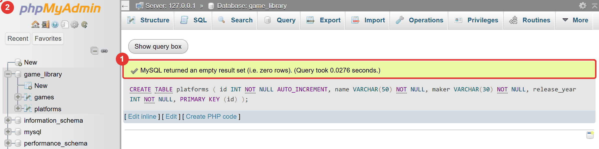
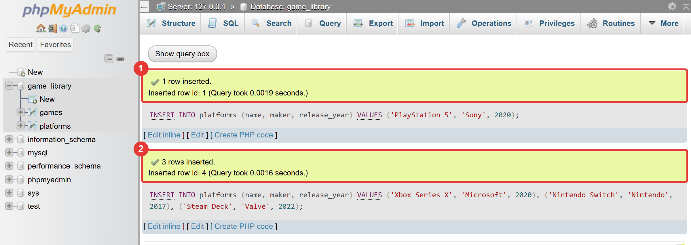
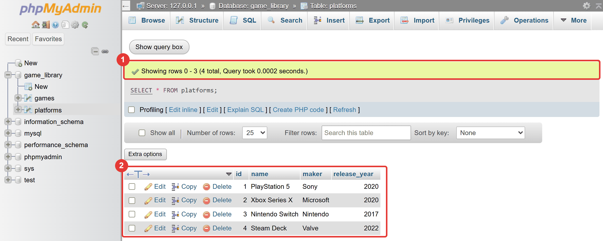
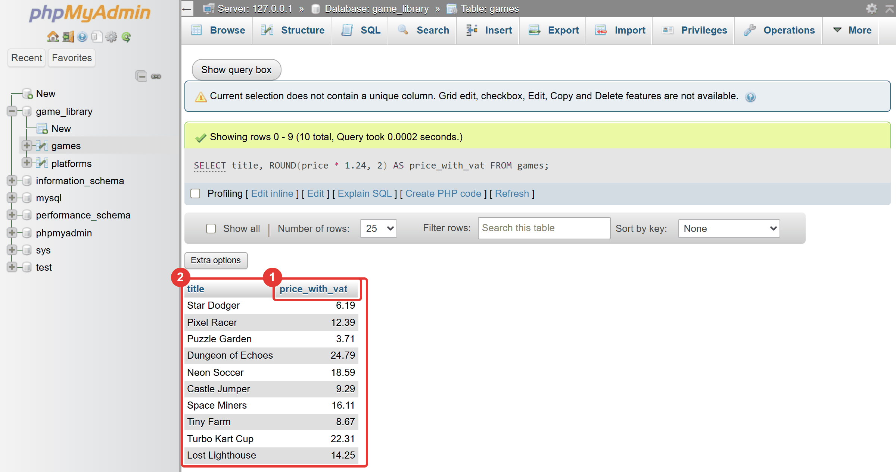
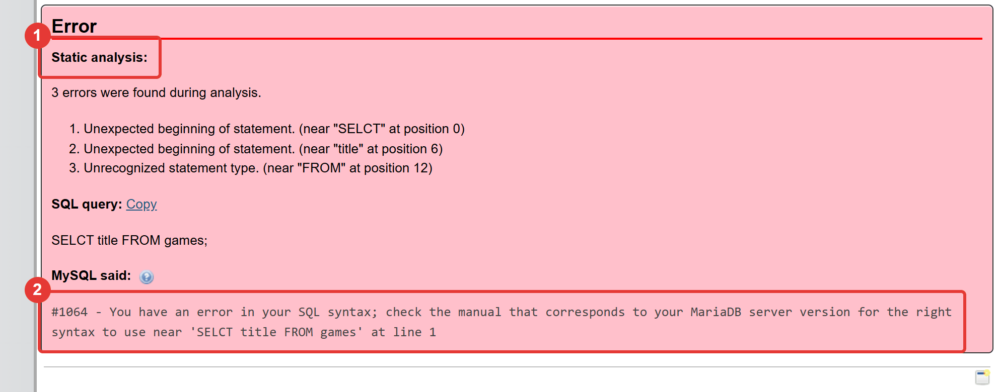

Μάθημα 2: Η γλώσσα SQL — CREATE, INSERT, SELECT¶
Βάση δεδομένων: η game_library με έναν νέο πίνακα, platforms, που τον φτιάχνεις και τον γεμίζεις με κώδικα, και πολλά ερωτήματα προς τον πίνακα games
Διάρκεια: 2 κύκλοι × περίπου 45′ εργασία (2 διδακτικές ώρες)
Φύλλο εργασίας
Αυτή η σελίδα εξηγεί τις έννοιες. Οι ασκήσεις και οι οδηγίες για κάθε κύκλο βρίσκονται στο Φύλλο εργασίας 2. Δούλεψε με τις δύο σελίδες ανοιχτές.
Αρχεία εργαστηρίου¶
| Αρχείο | Κύκλος |
|---|---|
| 01-create-platforms.sql | 1 |
| 02-insert-platforms.sql | 1 |
| 03-select.sql | 2 |
| 04-errors.sql | 2 |
Η αποστολή¶
Στο Μάθημα 1 έκανες τα πάντα με κουμπιά και το phpMyAdmin έγραφε τη SQL για σένα. Σήμερα τη γράφεις
εσύ. Θα φτιάξεις με κώδικα έναν νέο πίνακα, τον platforms, με τις πλατφόρμες στις οποίες παίζονται τα
παιχνίδια (PlayStation, Xbox και άλλες), θα τον γεμίσεις, και μετά θα ρωτήσεις τα παιχνίδια με εντολές
SELECT με διάφορους τρόπους. Στο τέλος θα ξέρεις και να διαβάζεις τα μηνύματα σφαλμάτων της SQL.
Γιατί να γράψεις εσύ τον κώδικα; Γιατί ένα πρόγραμμα Python δεν μπορεί να πατήσει κουμπιά. Από το Μάθημα 3 η Python θα στέλνει στη MySQL ακριβώς το κείμενο που γράφεις σήμερα. Ό,τι μάθεις εδώ θα το χρησιμοποιήσεις αυτούσιο μέσα στα προγράμματά σου.
Στο τέλος θα μπορείς¶
- να τρέχεις εντολές SQL στην καρτέλα SQL και να διαβάζεις το αποτέλεσμα ή το σφάλμα.
- να ακολουθείς τους κανόνες γραφής της SQL: ερωτηματικό, εισαγωγικά, σχόλια, κεφαλαία λέξεις-κλειδιά.
- να βλέπεις τις βάσεις και τους πίνακες με
SHOWκαιDESCRIBE. - να φτιάχνεις πίνακα με
CREATE TABLEκαι να τον σβήνεις μεDROP TABLE. - να προσθέτεις μία ή πολλές εγγραφές με
INSERT INTO. - να διαβάζεις δεδομένα με
SELECT: στήλες,*, ψευδώνυμα (AS) καιDISTINCT. - να κάνεις υπολογισμούς και να χρησιμοποιείς συναρτήσεις (
ROUND,CONCAT,UPPER). - να εντοπίζεις το λάθος από ένα μήνυμα σφάλματος της SQL, και να υποψιάζεσαι λάθος ακόμη και όταν δεν υπάρχει μήνυμα.
Πριν αρχίσεις¶
- Ξεκίνα τον Apache και τη MySQL από το XAMPP Control Panel και άνοιξε το phpMyAdmin.
- Έλεγξε ότι υπάρχει η βάση
game_libraryμε τον πίνακαgamesκαι δέκα παιχνίδια (καρτέλα Browse). Αν λείπει ή έχεις διαφορετικά δεδομένα, ζήτα από τον εκπαιδευτικό το αρχείο που τη φέρνει στη σωστή κατάσταση. - Φτιάξε έναν φάκελο
02-sql-basicsμέσα στον φάκελο των μαθημάτων και κατέβασε εκεί τα τέσσερα αρχεία του πίνακα. Κράτησε ακριβώς τα ονόματα, με κατάληξη.sql(όχι.sql.txt). - Θα χρειαστείς έναν επεξεργαστή κειμένου για να συμπληρώνεις τα κενά των αρχείων: το Σημειωματάριο (Notepad) ή το VS Code. Αν αποθηκεύσεις το αρχείο, κράτησε την κωδικοποίηση UTF-8, ώστε να μη χαλάσουν τα ελληνικά σχόλια.
Ο κύκλος εργασίας
Πρόβλεψη → εκτέλεση → σύγκριση → εξήγηση. Πριν τρέξεις μια εντολή, γράψε τι περιμένεις να δεις. Αν το αποτέλεσμα διαφέρει, βρήκες κάτι που αξίζει να καταλάβεις· δεν έκανες λάθος.
Κύκλος 1 — Γράφω εντολές που φτιάχνουν και γεμίζουν πίνακες¶
Σε αυτόν τον κύκλο μαθαίνεις τους κανόνες γραφής της SQL και δύο εντολές: την CREATE TABLE, που φτιάχνει
πίνακα, και την INSERT INTO, που προσθέτει εγγραφές.
1.1 Η καρτέλα SQL και οι κανόνες της γλώσσας¶
Επίλεξε τη βάση game_library στο αριστερό δέντρο και άνοιξε την καρτέλα SQL. Βλέπεις ένα πεδίο
κειμένου. Γράφεις εκεί μία ή περισσότερες εντολές και τις εκτελείς με το κουμπί Go ή με το
πλήκτρο Ctrl + Enter.
Μια εντολή (statement) της SQL είναι ένα κομμάτι κειμένου που τελειώνει με ερωτηματικό ;. Αν
γράψεις πολλές εντολές, τις χωρίζει το ;. Οι κανόνες γραφής είναι λίγοι:
- Οι λέξεις-κλειδιά δεν ξεχωρίζουν κεφαλαία από πεζά. Το
select, τοSelectκαι τοSELECTείναι το ίδιο. Συνηθίζεται να γράφονται οι λέξεις-κλειδιά με κεφαλαία και τα ονόματα με πεζά, ώστε να ξεχωρίζουν:SELECT title FROM games; - Οι αλλαγές γραμμής και τα κενά δεν έχουν σημασία. Η εντολή μπορεί να είναι σε μία γραμμή ή σε πέντε. Για να διαβάζεται, γράφουμε μία φράση ανά γραμμή και βάζουμε εσοχή στα εσωτερικά.
- Το κείμενο γράφεται σε μονά εισαγωγικά:
'Sony'. Οι αριθμοί γράφονται χωρίς εισαγωγικά:2020. - Σχόλια: ό,τι ακολουθεί το
--(δύο παύλες και ένα κενό) μέχρι το τέλος της γραμμής αγνοείται, όπως το#της Python. Τα σχόλια πολλών γραμμών γράφονται ανάμεσα σε/*και*/.
-- Αυτή η γραμμή είναι σχόλιο και δεν εκτελείται.
SELECT title -- σχόλιο και στο τέλος μιας γραμμής
FROM games;
Οι διαφορές με την Python, για να μη μπερδεύεσαι:
| Python | SQL | |
|---|---|---|
| Σχόλιο | # σχόλιο |
-- σχόλιο |
| Κείμενο | "Sony" ή 'Sony' |
'Sony' |
| Τέλος εντολής | αλλαγή γραμμής | ; |
| Δομή | εσοχή | φράσεις (SELECT, FROM, …) και παρενθέσεις |
| Ισότητα | == |
= (θα το δεις στο Μάθημα 4) |
Η SQL λέει τι θέλεις, όχι πώς να το βρεις
Στην Python γράφεις βήματα: έναν βρόχο που περνά από κάθε παιχνίδι και ελέγχει κάτι. Στη SQL γράφεις τι θέλεις: «δώσε μου τους τίτλους των παιχνιδιών». Το πώς το βρίσκει το αποφασίζει η MySQL. Γι' αυτό οι εντολές της SQL είναι τόσο κοντές.
Το phpMyAdmin ρωτά πριν σβήσεις
Όταν η εντολή περιέχει DROP TABLE (σβήσιμο πίνακα), το phpMyAdmin εμφανίζει ένα παράθυρο
«Do you really want to execute …?». Αν είσαι σίγουρος, πάτα OK. Δες την ενότητα 1.5.
1.2 Ποια βάση και ποιοι πίνακες¶
Τρεις μικρές εντολές σε βοηθούν να ξέρεις πού βρίσκεσαι. Δοκίμασέ τες στην καρτέλα SQL, μία τη φορά:
SHOW DATABASES;εμφανίζει τις βάσεις του εξυπηρετητή.SHOW TABLES;εμφανίζει τους πίνακες της βάσης που έχεις επιλεγμένη. Τώρα βλέπεις μόνο τονgames.DESCRIBE games;εμφανίζει τις στήλες του πίνακα, τον τύπο τους και αν είναι υποχρεωτικές:
| Field | Type | Null | Key | Default | Extra |
|---|---|---|---|---|---|
id |
int(11) |
NO | PRI | NULL | auto_increment |
title |
varchar(100) |
NO | NULL | ||
genre |
varchar(30) |
NO | NULL | ||
release_year |
int(11) |
NO | NULL | ||
price |
decimal(5,2) |
NO | NULL |
Η DESCRIBE δείχνει με λέξεις αυτό που είδες στην καρτέλα Structure. Το PRI στη στήλη Key
σημαίνει «πρωτεύον κλειδί».
Η εντολή USE
Αν ανοίξεις την καρτέλα SQL από την αρχική σελίδα του phpMyAdmin (χωρίς επιλεγμένη βάση), πρέπει
πρώτα να πεις ποια βάση θέλεις: USE game_library;. Όταν την ανοίγεις μέσα από μια βάση, αυτό γίνεται
μόνο του. Το πρόγραμμα Python θα το κάνει δηλώνοντας τη βάση όταν συνδέεται.
1.3 Δημιουργία πίνακα: CREATE TABLE¶
Στο Μάθημα 1 το Preview SQL σου έδειξε την εντολή που φτιάχνει έναν πίνακα. Τώρα τη γράφεις μόνος σου. Η μορφή της είναι:
CREATE TABLE όνομα_πίνακα (
στήλη1 ΤΥΠΟΣ περιορισμοί,
στήλη2 ΤΥΠΟΣ περιορισμοί,
PRIMARY KEY (στήλη)
);
Για τον πίνακα platforms (πλατφόρμες) η εντολή είναι η εξής:
CREATE TABLE platforms (
id INT NOT NULL AUTO_INCREMENT,
name VARCHAR(50) NOT NULL,
maker VARCHAR(30) NOT NULL,
release_year INT NOT NULL,
PRIMARY KEY (id)
);
| Κομμάτι | Τι σημαίνει |
|---|---|
CREATE TABLE platforms ( |
φτιάξε πίνακα με όνομα platforms· ανοίγει η λίστα των στηλών |
id INT NOT NULL AUTO_INCREMENT, |
στήλη id: ακέραιος, υποχρεωτική τιμή, αριθμείται αυτόματα |
name VARCHAR(50) NOT NULL, |
στήλη name: κείμενο έως 50 χαρακτήρες, υποχρεωτική τιμή |
PRIMARY KEY (id) |
το id είναι το πρωτεύον κλειδί |
); |
κλείνει η λίστα και τελειώνει η εντολή |
Δύο λεπτομέρειες που κοστίζουν πολλά λάθη:
- Κόμμα μετά από κάθε γραμμή, εκτός από την τελευταία. Ένα κόμμα πριν από το
)δίνει σφάλμα σύνταξης. - Η τελευταία γραμμή είναι το
PRIMARY KEY (id)και όχι μια στήλη. Εδώ φαίνεται καθαρά ότι το πρωτεύον κλειδί ορίζεται ξεχωριστά από τη στήλη.
Αν η εντολή πετύχει, το phpMyAdmin δείχνει «MySQL returned an empty result set (i.e. zero rows)». Δεν
είναι σφάλμα. Σημαίνει ότι η εντολή δούλεψε και δεν επέστρεψε γραμμές (η CREATE δεν επιστρέφει
δεδομένα). Ο νέος πίνακας εμφανίζεται και στο αριστερό δέντρο.

Έλεγξε τον πίνακα με DESCRIBE platforms;. Πρέπει να δεις τέσσερις στήλες, με το id να είναι PRI και
auto_increment.
1.4 Προσθήκη εγγραφών: INSERT INTO¶
Τη μορφή της INSERT την είδες στο Μάθημα 1, όταν το phpMyAdmin την έγραψε για σένα:
Οι κανόνες:
- Οι τιμές μπαίνουν με την ίδια σειρά και στον ίδιο αριθμό με τις στήλες που γράφεις.
- Το κείμενο σε μονά εισαγωγικά, οι αριθμοί χωρίς.
- Δεν γράφουμε το
id. Αφού είναιAUTO_INCREMENT, το βάζει η βάση. - Γράφουμε πάντα τη λίστα των στηλών. Έτσι η εντολή διαβάζεται και δεν χαλά όταν προστεθεί στήλη στον πίνακα.
Για πολλές εγγραφές μαζί, γράφεις μία INSERT με πολλές παρενθέσεις τιμών, χωρισμένες με κόμμα:
INSERT INTO platforms (name, maker, release_year)
VALUES
('Xbox Series X', 'Microsoft', 2020),
('Nintendo Switch', 'Nintendo', 2017);
Είναι ένα ερώτημα αντί για δύο, και τρέχει πιο γρήγορα. Το phpMyAdmin απαντά με το πλήθος των εγγραφών:

Τέσσερα λάθη που θα συναντήσεις:
| Μήνυμα | Αιτία | Παράδειγμα |
|---|---|---|
#1136 - Column count doesn't match value count at row 1 |
ο αριθμός των τιμών δεν ταιριάζει με τον αριθμό των στηλών | τρεις στήλες, δύο τιμές |
#1062 - Duplicate entry '1' for key 'PRIMARY' |
έδωσες id που υπάρχει ήδη |
INSERT με ρητό id = 1 |
#1054 - Unknown column 'Sony' in 'VALUES' |
ξέχασες τα εισαγωγικά σε κείμενο μιας λέξης: η MySQL νομίζει ότι είναι όνομα στήλης | VALUES ('PlayStation 5', Sony, 2020) |
#1064 - You have an error in your SQL syntax … |
ξέχασες τα εισαγωγικά σε κείμενο με κενό, ή ξέχασες κόμμα | VALUES (PlayStation 5, 'Sony', 2020) |
1.5 Ξανά από την αρχή: DROP TABLE¶
Τρέξε δύο φορές την ίδια CREATE TABLE platforms. Η δεύτερη φορά δίνει:
Η βάση δεν δημιουργεί πίνακα με όνομα που υπάρχει. Για να μπορείς να τρέχεις ένα αρχείο όσες φορές θέλεις, σβήνεις πρώτα τον πίνακα:
- Η
DROP TABLEσβήνει τον πίνακα μαζί με όλα του τα δεδομένα, και δεν υπάρχει «αναίρεση». - Το
IF EXISTSσημαίνει «αν υπάρχει». Χωρίς αυτό, η εντολή δίνει σφάλμα όταν ο πίνακας δεν υπάρχει.
Ένα αρχείο που αρχίζει με DROP TABLE IF EXISTS, συνεχίζει με CREATE TABLE και τελειώνει με INSERT
φτιάχνει τον πίνακα από την αρχή κάθε φορά. Έτσι θα γράφονται τα αρχεία σε όλο το υλικό. Και αν
τρέξεις δύο φορές μόνο τα INSERT, θα έχεις διπλές εγγραφές: ένας ακόμη λόγος να ξεκινάς από τη
DROP.
Στάδιο 1 — Ο πίνακας platforms¶
Άνοιξε το 01-create-platforms.sql σε επεξεργαστή κειμένου. Συμπλήρωσε τα τέσσερα κενά (____). Μετά
άνοιξε την καρτέλα SQL της βάσης game_library, αντίγραψε όλο το περιεχόμενο του αρχείου μέσα στο πεδίο
και πάτα Go.
-- Στάδιο 1 — Δημιουργία του πίνακα platforms.
--
-- Ο πίνακας κρατά τις πλατφόρμες (κονσόλες) στις οποίες παίζονται τα παιχνίδια:
-- id αύξων αριθμός, πρωτεύον κλειδί
-- name όνομα της πλατφόρμας, έως 50 χαρακτήρες
-- maker κατασκευαστής, έως 30 χαρακτήρες
-- release_year χρονιά κυκλοφορίας, ακέραιος
--
-- Πώς το τρέχεις:
-- 1. Συμπλήρωσε τα κενά (____) σε έναν επεξεργαστή κειμένου (Σημειωματάριο ή VS Code).
-- 2. Άνοιξε στο phpMyAdmin τη βάση game_library και την καρτέλα SQL.
-- 3. Αντίγραψε ΟΛΟ το περιεχόμενο του αρχείου μέσα στο πεδίο και πάτα Go.
-- TODO 1: φτιάξε πίνακα με όνομα platforms
CREATE TABLE ____ (
id INT NOT NULL ____, -- TODO 2: αυτόματη αρίθμηση
name VARCHAR(50) NOT NULL,
maker VARCHAR(30) NOT NULL,
release_year ____ NOT NULL, -- TODO 3: ακέραιος αριθμός
____ KEY (id) -- TODO 4: το id είναι το πρωτεύον κλειδί
);
Έλεγξε με SHOW TABLES; και DESCRIBE platforms;.
Στάδιο 2 — Οι εγγραφές¶
Άνοιξε το 02-insert-platforms.sql, συμπλήρωσε τα κενά και τρέξε το με τον ίδιο τρόπο. Μετά εμφάνισε τον
πίνακα με SELECT * FROM platforms;. Πρέπει να δεις τέσσερις εγγραφές.
-- Στάδιο 2 — Προσθήκη πλατφορμών.
--
-- Πρέπει πρώτα να έχεις τρέξει το Στάδιο 1 (να υπάρχει ο πίνακας platforms).
-- Συμπλήρωσε τα κενά (____) και τρέξε όλο το αρχείο στην καρτέλα SQL της βάσης game_library.
--
-- Δεν γράφουμε id: το βάζει η βάση μόνη της (AUTO_INCREMENT).
-- TODO 1: πρόσθεσε μία εγγραφή: PlayStation 5, κατασκευαστής Sony, χρονιά 2020
INSERT INTO platforms (name, maker, release_year)
VALUES ('PlayStation 5', ____, ____);
-- TODO 2: πρόσθεσε με ΜΙΑ εντολή τρεις εγγραφές. Η πρώτη είναι έτοιμη.
-- Nintendo Switch, Nintendo, 2017
-- Steam Deck, Valve, 2022
INSERT INTO platforms (name, maker, release_year)
VALUES
('Xbox Series X', 'Microsoft', 2020),
____,
____;
Συνέχισε στο Φύλλο εργασίας, Κύκλος 1.
Κύκλος 2 — Διαβάζω δεδομένα με SELECT¶
Η SELECT είναι η εντολή που θα χρησιμοποιείς περισσότερο από όλες. Δεν αλλάζει τίποτα στη βάση: ζητά
δεδομένα και παίρνει απάντηση. Σε αυτόν τον κύκλο μαθαίνεις να διαλέγεις στήλες, να τις μετονομάζεις, να
αφαιρείς τις επαναλήψεις και να υπολογίζεις.
2.1 SELECT και FROM¶
- Το
SELECTλέει ποιες στήλες θέλεις, τοFROMαπό ποιον πίνακα. - Το
*σημαίνει «όλες οι στήλες»:SELECT * FROM platforms; - Οι στήλες εμφανίζονται με τη σειρά που τις γράφεις, όχι με τη σειρά του πίνακα. Μπορείς να γράψεις και την ίδια στήλη δύο φορές.
- Το αποτέλεσμα είναι ένας προσωρινός πίνακας: υπάρχει μόνο στην οθόνη. Ο πίνακας της βάσης μένει όπως ήταν.

Η SELECT μπορεί να δουλέψει και χωρίς πίνακα, σαν αριθμομηχανή: SELECT 2 + 3; δίνει 5.
2.2 Ψευδώνυμα: AS¶
Μπορείς να δώσεις άλλο όνομα στη στήλη του αποτελέσματος με το AS:
Το price_eur εμφανίζεται ως επικεφαλίδα της στήλης. Το ψευδώνυμο αλλάζει μόνο αυτό που βλέπεις, όχι
τη στήλη του πίνακα. Αν θέλεις ψευδώνυμο με κενά ή ελληνικά, γράψ' το ανάμεσα σε ανάποδα εισαγωγικά
(backticks): AS `Τιμή (€)`. Τα ψευδώνυμα γίνονται απαραίτητα όταν υπολογίζεις (ενότητα 2.4), γιατί
αλλιώς η στήλη παίρνει ως όνομα ολόκληρο τον υπολογισμό.
2.3 Χωρίς επαναλήψεις: DISTINCT¶
Ποια είδη παιχνιδιών υπάρχουν; Αν γράψεις SELECT genre FROM games;, παίρνεις δέκα γραμμές, και το
«Αγωνιστικό» εμφανίζεται δύο φορές. Με το DISTINCT κάθε τιμή εμφανίζεται μία φορά:
| Ερώτημα | Γραμμές |
|---|---|
SELECT genre FROM games; |
10 |
SELECT DISTINCT genre FROM games; |
9 |
SELECT release_year FROM games; |
10 |
SELECT DISTINCT release_year FROM games; |
6 |
Το DISTINCT γράφεται αμέσως μετά το SELECT και ισχύει για όλες τις στήλες που ακολουθούν.
2.4 Υπολογισμοί και συναρτήσεις¶
Μέσα στη SELECT μπορείς να κάνεις πράξεις. Οι τελεστές μοιάζουν με της Python, με λίγες διαφορές:
| Πράξη | Python | SQL | Αποτέλεσμα για 7 και 2 |
|---|---|---|---|
| πρόσθεση, αφαίρεση, πολλαπλασιασμός | + - * |
+ - * |
9, 5, 14 |
| διαίρεση | / |
/ |
3.5000 |
| ακέραιο πηλίκο | // |
DIV |
3 |
| υπόλοιπο | % |
% |
1 |
| δύναμη | ** |
POWER(2, 3) |
8 |
Το ** δεν υπάρχει στη SQL
Αν γράψεις 2 ** 3 παίρνεις σφάλμα σύνταξης. Η δύναμη γράφεται POWER(2, 3).
Η τιμή με ΦΠΑ 24% είναι price * 1.24. Το αποτέλεσμα έχει πολλά δεκαδικά (π.χ. 6.1876), και γι' αυτό
χρησιμοποιούμε τη συνάρτηση ROUND(τιμή, δεκαδικά):

Η συνάρτηση είναι μια λέξη ακολουθούμενη από παρενθέσεις με ορίσματα, όπως η round() της Python.
Οι συναρτήσεις που θα χρησιμοποιήσεις σήμερα, μαζί με την αντίστοιχη της Python:
| SQL | Τι κάνει | Παράδειγμα | Στην Python |
|---|---|---|---|
ROUND(x, d) |
στρογγυλεύει σε d δεκαδικά |
ROUND(4.986, 2) → 4.99 |
round(x, d) |
CONCAT(a, b, ...) |
κολλά κείμενα και αριθμούς | CONCAT(title, ' (', release_year, ')') → Star Dodger (2021) |
f"{title} ({release_year})" |
UPPER(s) |
κεφαλαία | UPPER('Παζλ') → ΠΑΖΛ |
s.upper() |
LOWER(s) |
πεζά | LOWER('ΠΑΖΛ') → παζλ |
s.lower() |
Οι υπολογισμοί δεν αλλάζουν τον πίνακα
Το price * 1.24 υπολογίζεται μόνο στο αποτέλεσμα. Οι τιμές στον πίνακα games μένουν όπως ήταν.
Για να αλλάξεις δεδομένα στη βάση χρειάζεται η UPDATE (Μάθημα 6).
Η προειδοποίηση «Current selection does not contain a unique column»
Όταν το αποτέλεσμα έχει υπολογισμούς ή δεν περιέχει το πρωτεύον κλειδί, το phpMyAdmin γράφει ότι δεν μπορεί να επιτρέψει επεξεργασία γραμμών από το αποτέλεσμα. Δεν είναι σφάλμα· το αποτέλεσμα είναι σωστό.
2.5 Πώς διαβάζεται ένα σφάλμα της SQL¶
Στην Python διάβαζες το μήνυμα από την τελευταία γραμμή. Στο phpMyAdmin το κόκκινο πλαίσιο «Error» έχει τρία μέρη:
- Static analysis: μια δική του, πρόχειρη ανάλυση του phpMyAdmin. Μπορεί να είναι μπερδεμένη ή να μετρά πολλά «σφάλματα» για ένα μόνο λάθος.
- SQL query: η εντολή που στάλθηκε.
- MySQL said: η πραγματική απάντηση της βάσης, με αριθμό σφάλματος και εξήγηση. Αυτό διαβάζεις.

Δύο πράγματα στο μήνυμα #1064:
- Το
near '…'δείχνει από πού και μετά η MySQL δεν κατάλαβε. Το λάθος είναι συνήθως στην αρχή αυτού του κειμένου ή ακριβώς πριν από αυτό (εδώ: τοSELCT). - Οι αριθμοί είναι σταθεροί. Αν τους μάθεις, καταλαβαίνεις αμέσως τι έγινε:
| Σφάλμα | Τι σημαίνει | Παράδειγμα |
|---|---|---|
#1064 |
σφάλμα σύνταξης | SELCT, ξεχασμένο εισαγωγικό, κόμμα που περισσεύει |
#1054 - Unknown column 'titel' |
άγνωστη στήλη | SELECT titel FROM games |
#1146 - Table 'game_library.game' doesn't exist |
άγνωστος πίνακας | FROM game |
#1136 |
λάθος πλήθος τιμών | INSERT με λιγότερες τιμές από στήλες |
#1062 |
διπλή τιμή σε μοναδικό κλειδί | INSERT με id που υπάρχει |
#1050 |
ο πίνακας υπάρχει ήδη | δεύτερη CREATE TABLE |
Το ίδιο σφάλμα, άλλο μήνυμα
Το #1054 λέει «Unknown column 'titel' in 'SELECT'» στο XAMPP που χρησιμοποιούμε. Σε παλιότερες
εκδόσεις λέει «in 'field list'». Ο αριθμός είναι ο ίδιος.
Δεν δίνουν όλα τα λάθη μήνυμα
Κάποια λάθη είναι έγκυρη SQL που κάνει κάτι διαφορετικό από αυτό που ήθελες. Η βάση δεν διαμαρτύρεται, και το αποτέλεσμα φαίνεται λογικό ώσπου να το προσέξεις. Στο Στάδιο 4 θα βρεις ένα. Γι' αυτό προβλέπεις πρώτα τι θα δεις και συγκρίνεις μετά.
Στάδιο 3 — Επτά ερωτήματα¶
Άνοιξε το 03-select.sql, συμπλήρωσε τα κενά και τρέξε τα ερωτήματα ένα-ένα: αντίγραψε ένα ερώτημα στην
καρτέλα SQL, πάτα Go, δες το αποτέλεσμα. Πρώτα πρόβλεψε τι θα εμφανιστεί.
-- Στάδιο 3 — Διαβάζω δεδομένα με SELECT.
--
-- Κάθε ερώτημα τρέχει ΞΕΧΩΡΙΣΤΑ: αντίγραψε ένα ερώτημα στην καρτέλα SQL της βάσης game_library, πάτα Go,
-- δες το αποτέλεσμα και μετά πέρασε στο επόμενο. Πρώτα πρόβλεψε τι θα δεις.
-- Συμπλήρωσε τα κενά (____) πριν το τρέξεις.
-- Ερώτημα 1 (έτοιμο): δύο στήλες
SELECT title, price
FROM games;
-- Ερώτημα 2: όλες οι στήλες του πίνακα platforms
SELECT ____
FROM platforms;
-- Ερώτημα 3: ο τίτλος και η χρονιά κάθε παιχνιδιού (με αυτή τη σειρά)
SELECT ____, ____
FROM games;
-- Ερώτημα 4: ο τίτλος και η τιμή, με την τιμή να εμφανίζεται με τη στήλη «price_eur»
SELECT title, price AS ____
FROM games;
-- Ερώτημα 5: τα διαφορετικά είδη παιχνιδιών, χωρίς επαναλήψεις
SELECT ____ genre
FROM games;
-- Ερώτημα 6: ο τίτλος και η τιμή με ΦΠΑ 24%, στρογγυλεμένη σε 2 δεκαδικά
SELECT title, ROUND(price * ____, 2) AS price_with_vat
FROM games;
-- Ερώτημα 7 (έτοιμο): τίτλος και χρονιά σε ένα κείμενο, π.χ. «Star Dodger (2021)»
SELECT CONCAT(title, ' (', release_year, ')') AS label
FROM games;
Στάδιο 4 — Σπασμένες εντολές¶
Άνοιξε το 04-errors.sql. Κάθε ερώτημα έχει ένα λάθος. Πρόβλεψε τι θα γίνει, τρέξ' το, διάβασε το μήνυμα
και διόρθωσέ το.
-- Στάδιο 4 — Σπασμένες εντολές.
--
-- Κάθε ερώτημα έχει ΕΝΑ λάθος. Για καθένα:
-- 1. Πρόβλεψε τι θα γίνει (σφάλμα; ποιο; ή αποτέλεσμα;).
-- 2. Τρέξε το ΞΕΧΩΡΙΣΤΑ στην καρτέλα SQL της βάσης game_library και διάβασε το μήνυμα.
-- 3. Διόρθωσε το λάθος και τρέξε το ξανά.
-- Ερώτημα 1
SELCT title FROM games;
-- Ερώτημα 2
SELECT titel FROM games;
-- Ερώτημα 3
SELECT title FROM game;
-- Ερώτημα 4 (πρόσεξε το αποτέλεσμα: έχει σφάλμα, αλλά η βάση δεν διαμαρτύρεται)
SELECT title genre
FROM games;
-- Ερώτημα 5
SELECT name, maker, FROM platforms;
Συνέχισε στο Φύλλο εργασίας, Κύκλος 2.
Έλεγχος πριν ολοκληρώσεις¶
- □ Ο πίνακας
platformsυπάρχει και έχει τέσσερις εγγραφές. - □ Μπορείς να γράψεις μια
CREATE TABLEκαι μιαINSERTχωρίς να τις αντιγράψεις. - □ Τα επτά ερωτήματα του Σταδίου 3 έτρεξαν και μπορείς να εξηγήσεις το αποτέλεσμα του καθενός.
- □ Για καθένα από τα πέντε σπασμένα ερωτήματα ξέρεις τι είδους λάθος έχει.
- □ Ξέρεις ποιο ερώτημα του Σταδίου 4 δεν έδωσε σφάλμα και γιατί.
- □ Όταν τελείωσες, πάτησες Stop στον Apache και στη MySQL.
Για να θυμάσαι¶
- Η εντολή SQL τελειώνει με
;. Οι λέξεις-κλειδιά δεν ξεχωρίζουν κεφαλαία από πεζά, το κείμενο μπαίνει σε μονά εισαγωγικά και τα σχόλια αρχίζουν με--. CREATE TABLEφτιάχνει πίνακα,DROP TABLE IF EXISTSτον σβήνει (με όλα τα δεδομένα),INSERT INTOπροσθέτει εγγραφές,SELECTδιαβάζει.- Στην
INSERTγράφεις πάντα τη λίστα στηλών, με τιμές με την ίδια σειρά, και όχι τοid. - Ένα αρχείο που ξεκινά με
DROP TABLE IF EXISTSτρέχει όσες φορές θέλεις. - Η
SELECTδεν αλλάζει τη βάση. Το*σημαίνει «όλες οι στήλες», τοASδίνει ψευδώνυμο, τοDISTINCTαφαιρεί τις επαναλήψεις. - Οι υπολογισμοί και οι συναρτήσεις (
ROUND,CONCAT,UPPER) ισχύουν μόνο για το αποτέλεσμα. - Στο σφάλμα διάβαζε το «MySQL said»: τον αριθμό και το
near '…'. Κάποια λάθη δεν δίνουν μήνυμα.
Λεξιλόγιο¶
εντολή (statement), λέξη-κλειδί, ερώτημα (query), σχόλιο, CREATE TABLE, DROP TABLE,
INSERT INTO, SELECT, FROM, AS (ψευδώνυμο, alias), DISTINCT, συνάρτηση,
όρισμα, αποτέλεσμα (result set), σφάλμα σύνταξης (syntax error), SHOW, DESCRIBE.
Δική σου εκδοχή¶
Αν τελειώσεις νωρίτερα, δούλεψε με μία αλλαγή τη φορά και δοκίμαζε μετά από κάθε αλλαγή:
- Φτιάξε με SQL έναν πίνακα
playersμε στήλεςid,nickname(VARCHAR(20)),levelκαιscore(και τα δύοINT) και πρόσθεσε πέντε παίκτες με μίαINSERT. Εμφάνισε ταnicknameκαιscoreμε ψευδώνυμα στα ελληνικά. - Εμφάνισε για κάθε παιχνίδι ένα κείμενο της μορφής
STAR DODGER — 4.99 €(πρόσεξε τοUPPERκαι τοCONCAT). - Πρόκληση 1: το
SELECT price * 1.24 FROM games;(χωρίςROUND) δείχνει τέσσερα δεκαδικά, ενώ η τιμή έχει δύο και ο συντελεστής δύο. Πόσα δεκαδικά θα έδινε ο πολλαπλασιασμός με1.2; Δοκίμασέ το και βρες τον κανόνα. - Πρόκληση 2: η
LENGTH('Παζλ')δίνει8, ενώ το «Παζλ» έχει 4 γράμματα. Δοκίμασε και τηνCHAR_LENGTH('Παζλ'). Γιατί διαφέρουν; Υπόδειξη: πόσα byte πιάνει ένα ελληνικό γράμμα στοutf8mb4;